E-text prepared by Chris Curnow, Lindy Walsh, Linda Cantoni,
and the Project Gutenberg Online Distributed Proofreading Team
(http://www.pgdp.net).
Music transcribed by Linda Cantoni.
Transcriber’s Note
Midi, PDF, and MusicXML files have been provided for the songs in this e-book. To hear a song, click on the [Listen] link. To view a song in sheet-music form, click on the [PDF] link. To view MusicXML code for a song, click on the [MusicXML] link. All lyrics are set forth in text below the music images.
In the original, some titles use V for U and I for J. This has been preserved in this e-book.
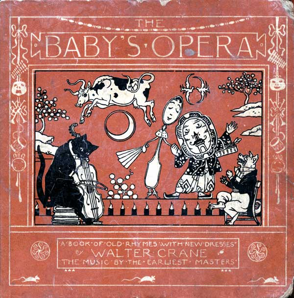
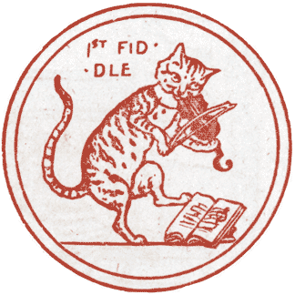
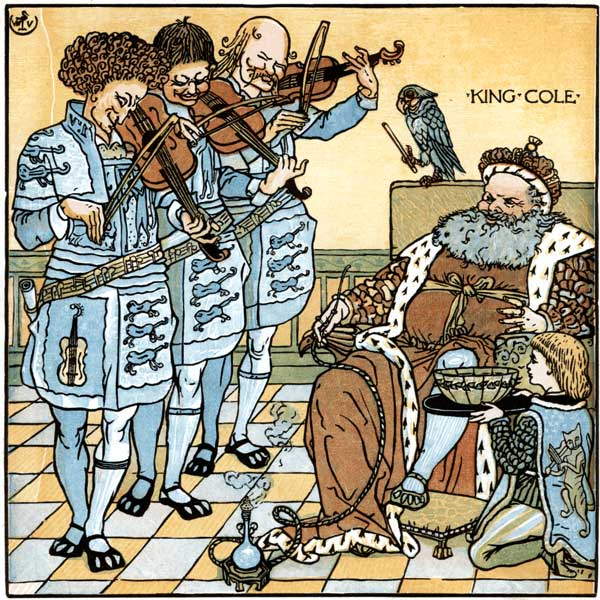
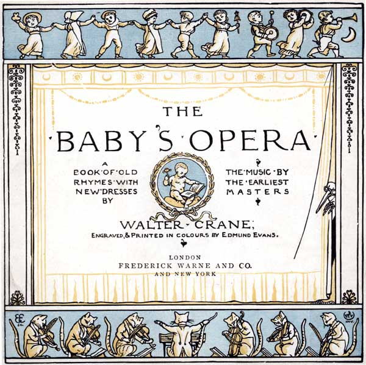
| A BOOK OF OLD RHYMES WITH NEW DRESSES BY |
THE MUSIC BY THE EARLIEST MASTERS |
LONDON
FREDERICK WARNE AND CO.
AND NEW YORK
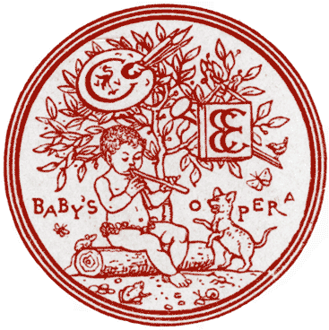
TO
THE HONOURABLE
MRS. GEORGE HOWARD
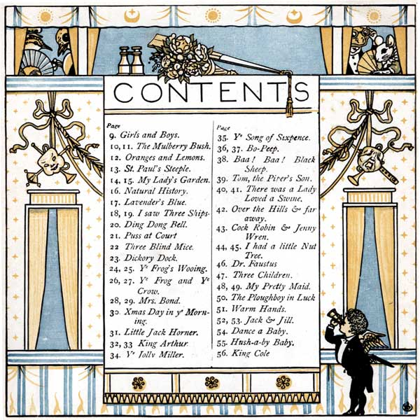
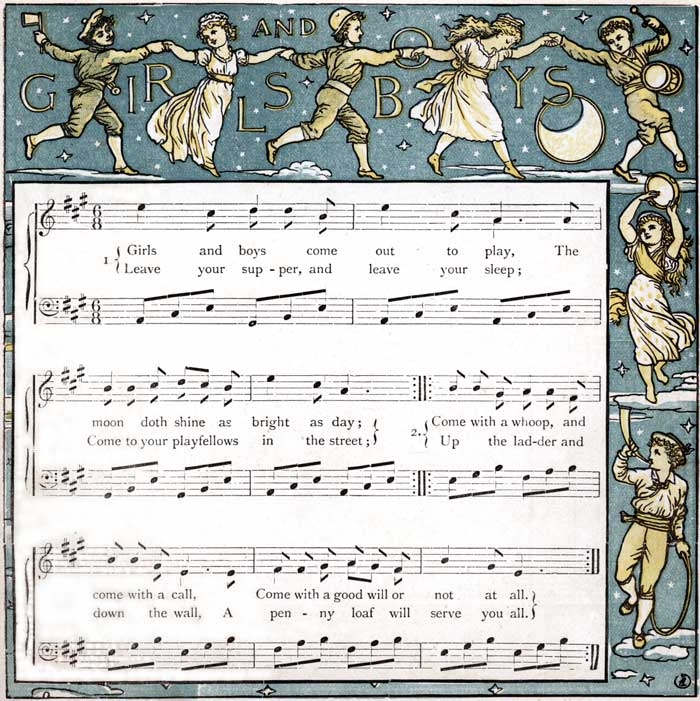
|
1. Girls and boys come out to play, The moon doth shine as bright as day; Leave your supper, and leave your sleep; Come to your playfellows in the street; 2. Come with a whoop, and come with a call. Come with a good will or not at all. Up the ladder and down the wall, A penny loaf will serve you all. |
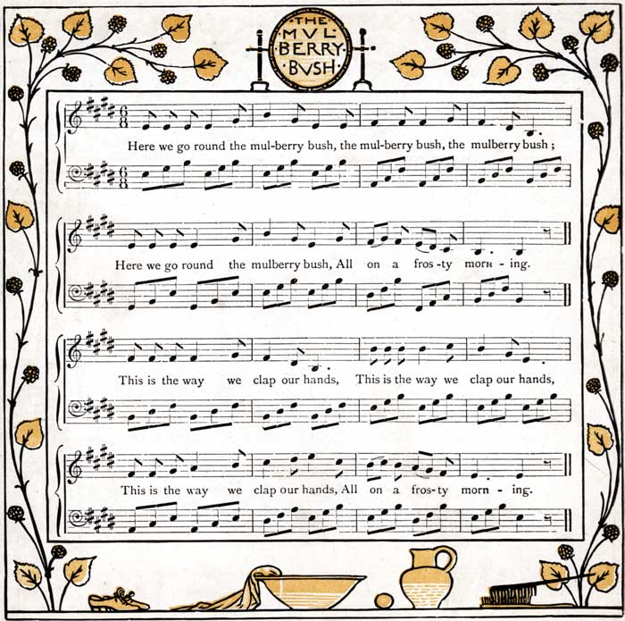
|
Here we go round the mulberry bush, the mulberry bush, the mulberry bush; Here we go round the mulberry bush, All on a frosty morning. This is the way we clap our hands, This is the way we clap our hands, This is the way we clap our hands, All on a frosty morning. |
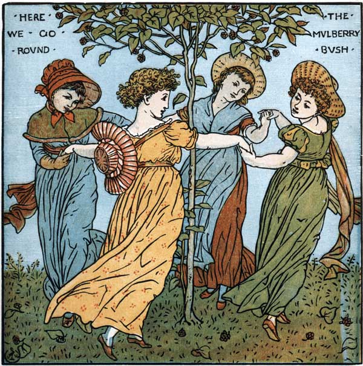
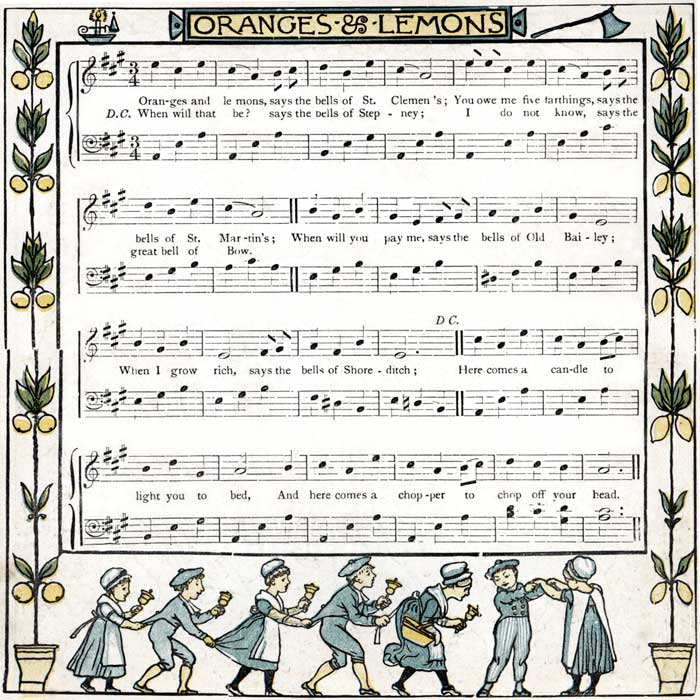
|
Oranges and lemons, says the bells of St. Clemen’s; You owe me five farthings, says the bells of St. Martin’s; When will you pay me, says the bells of Old Bailey; When I grow rich, says the bells of Shoreditch; When will that be? says the bells of Stepney; I do not know, says the great bell of Bow. Here comes a candle to light you to bed, And here comes a chopper to chop off your head. |
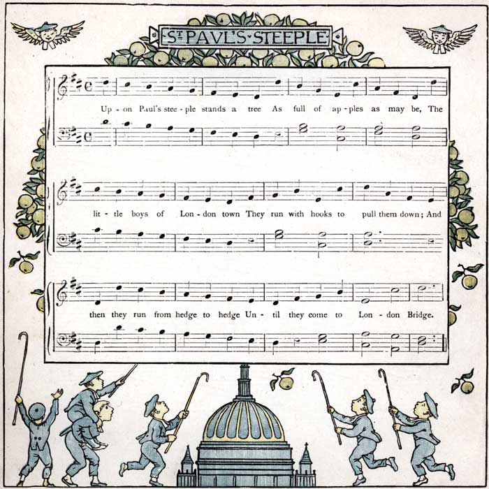
|
Upon Paul’s steeple stands a tree As full of apples as may be, The little boys of London town They run with hooks to pull them down; And then they run from hedge to hedge Until they come to London Bridge. |
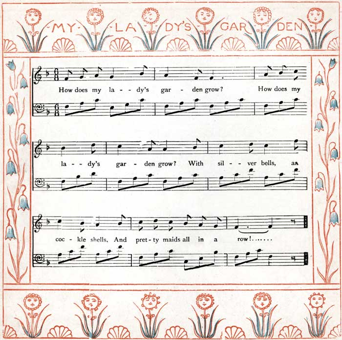
|
How does my lady’s garden grow? How does my lady’s garden grow? With silver bells, and cockle shells, And pretty maids all in a row! |
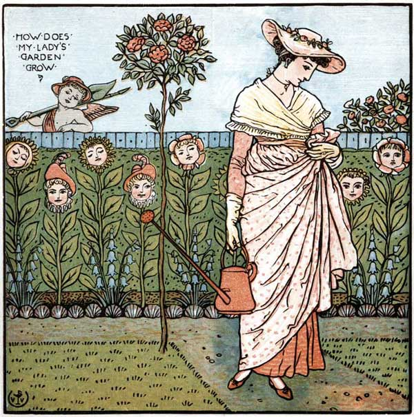
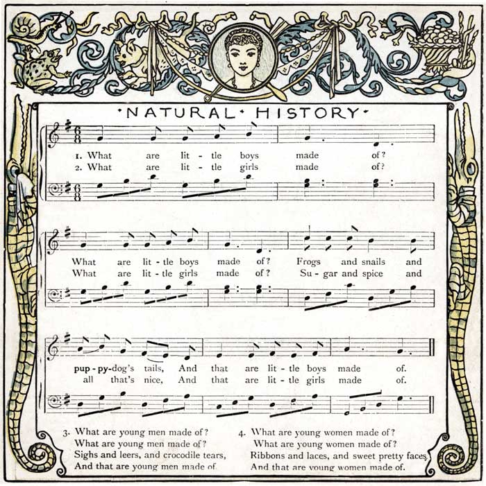
|
1. What are little boys made of? What are little boys made of? Frogs and snails and puppy-dog’s tails, And that are little boys made of. 2. What are little girls made of? What are little girls made of? Sugar and spice and all that’s nice, And that are little girls made of. 3. What are young men made of? What are young men made of? Sighs and leers, and crocodile tears, And that are young men made of. 4. What are young women made of? What are young women made of? Ribbons and laces, and sweet pretty faces, And that are young women made of. |
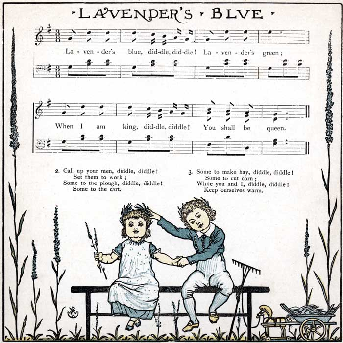
|
1. Lavender’s blue, diddle, diddle! Lavender’s green; When I am king, diddle, diddle! You shall be queen. 2. Call up your men, diddle, diddle! Set them to work; Some to the plough, diddle, diddle! Some to the cart. 3. Some to make hay, diddle, diddle! Some to cut corn; While you and I, diddle, diddle! Keep ourselves warm. |
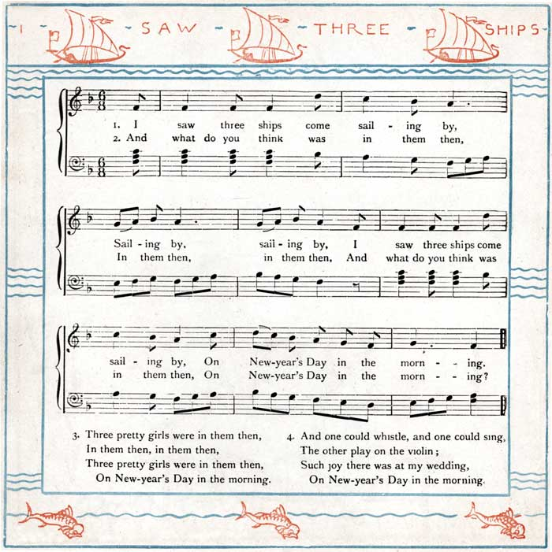
|
1. I saw three ships come sailing by, Sailing by, sailing by, I saw three ships come sailing by, On New-year’s Day in the morning. 2. And what do you think was in them then, In them then, in them then, And what do you think was in them then, On New-year’s Day in the morning? 3. Three pretty girls were in them then, In them then, in them then, Three pretty girls were in them then, On New-year’s Day in the morning. 4. And one could whistle, and one could sing, The other play on the violin; Such joy there was at my wedding, On New-year’s Day in the morning. |
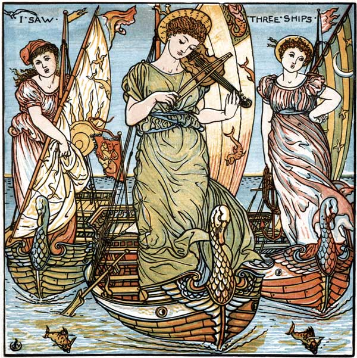
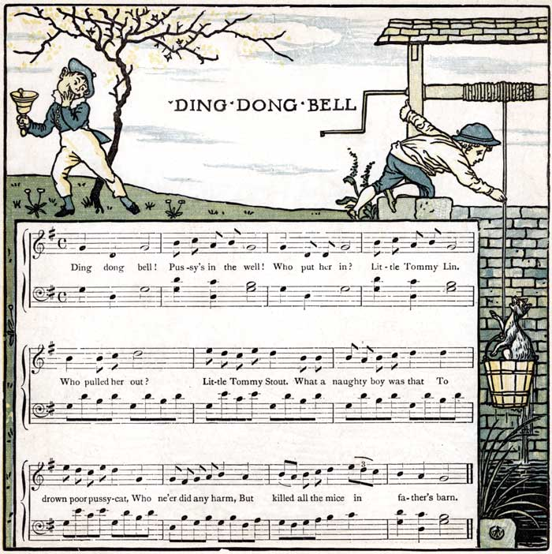
|
Ding dong bell! Pussy’s in the well! Who put her in? Little Tommy Lin. Who pulled her out? Little Tommy Stout. What a naughty boy was that To drown poor pussy-cat, Who ne’er did any harm, But killed all the mice in father’s barn. |
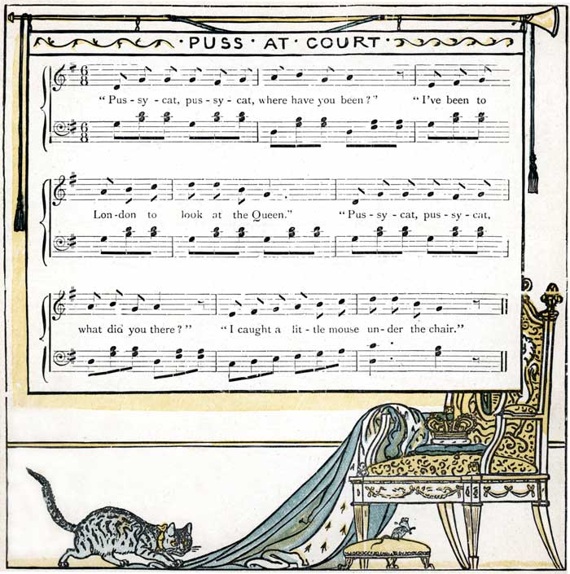
|
“Pussy-cat, pussy-cat, where have you been?” “I’ve been to London to look at the Queen.” “Pussy-cat, pussy-cat, what did you there?” “I caught a little mouse under the chair.” |
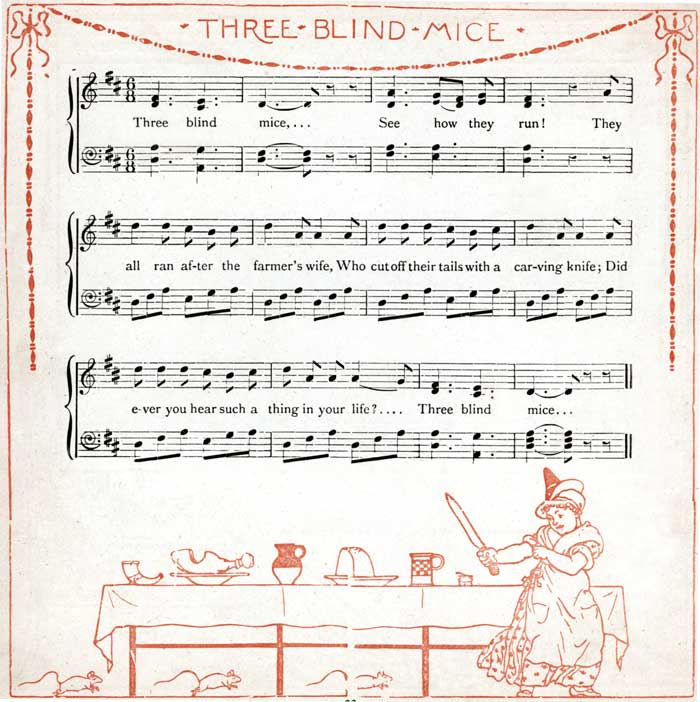
|
Three blind mice, See how they run! They all ran after the farmer’s wife, Who cut off their tails with a carving knife; Did ever you hear such a thing in your life? Three blind mice. |
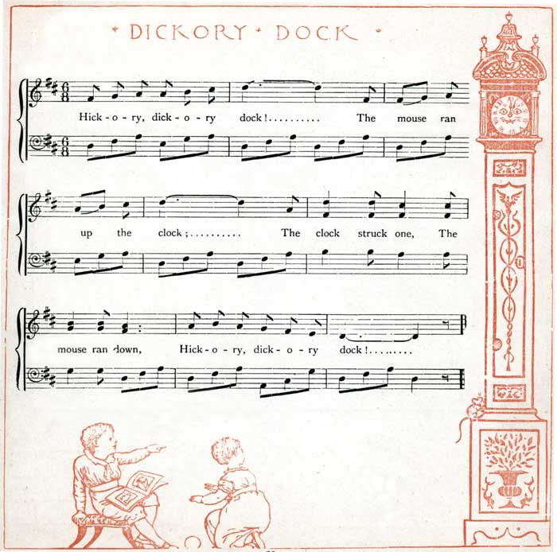
|
Hickory, dickory dock! The mouse ran up the clock; The clock struck one, The mouse ran down, Hickory, dickory dock! |
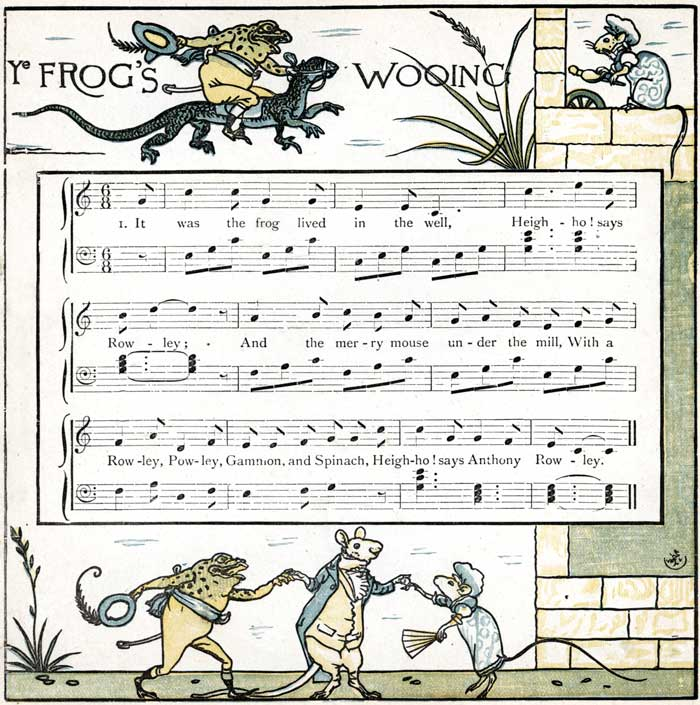
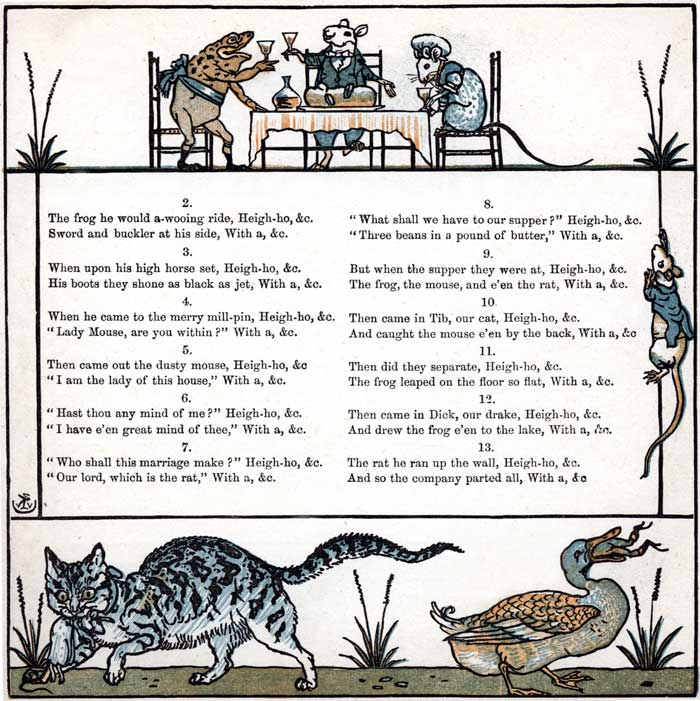
| 1. |
| It was the frog lived in the well, Heigh-ho! says Rowley; And the merry mouse under the mill, With a Rowley, Powley, Gammon, and Spinach, Heigh-ho! says Anthony Rowley. |
| 2. |
| The frog he would a-wooing ride, Heigh-ho, &c. Sword and buckler at his side, With a, &c. |
| 3. |
| When upon his high horse set, Heigh-ho, &c. His boots they shone as black as jet, With a, &c. |
| 4. |
| When he came to the merry mill-pin, Heigh-ho, &c. “Lady Mouse, are you within?” With a, &c. |
| 5. |
| Then came out the dusty mouse, Heigh-ho, &c. “I am the lady of this house,” With a, &c. |
| 6. |
| “Hast thou any mind of me?” Heigh-ho, &c. “I have e’en great mind of thee,” With a, &c. |
| 7. |
| “Who shall this marriage make?” Heigh-ho, &c. “Our lord, which is the rat,” With a, &c. |
| 8. |
| “What shall we have to our supper?” Heigh-ho, &c. “Three beans in a pound of butter,” With a, &c. |
| 9. |
| But when the supper they were at, Heigh-ho, &c. The frog, the mouse, and e’en the rat, With a, &c. |
| 10. |
| Then came in Tib, our cat, Heigh-ho, &c. And caught the mouse e’en by the back, With a, &c. |
| 11. |
| Then did they separate, Heigh-ho, &c. The frog leaped on the floor so flat, With a, &c. |
| 12. |
| Then came in Dick, our drake, Heigh-ho, &c. And drew the frog e’en to the lake, With a, &c. |
| 13. |
| The rat he ran up the wall, Heigh-ho, &c. And so the company parted all, With a, &c. |
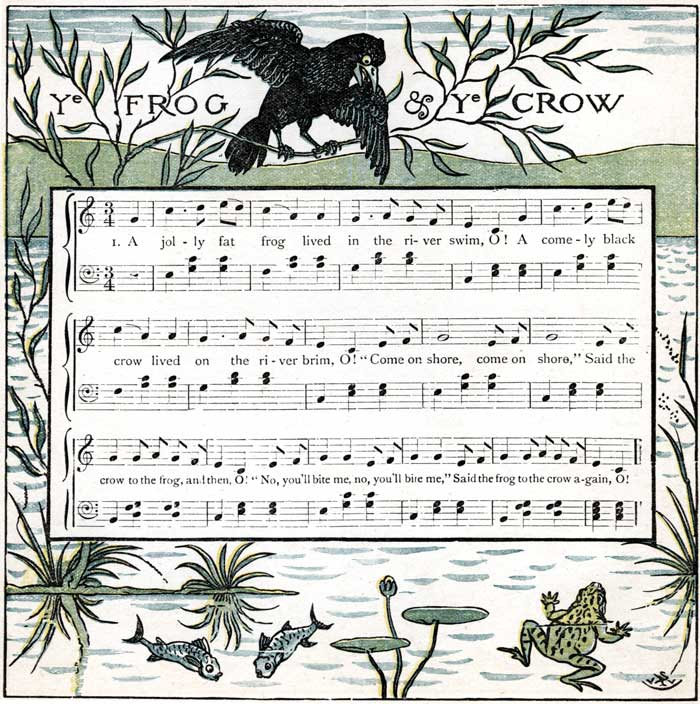
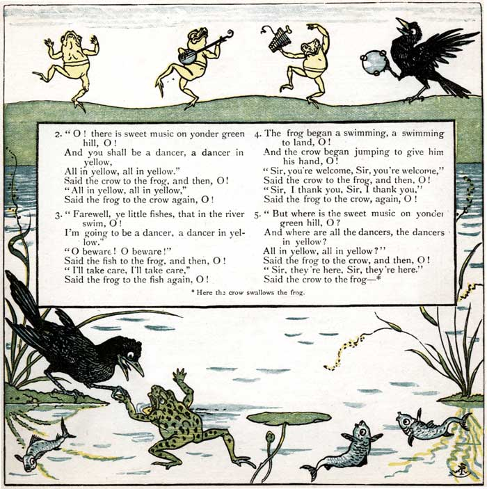
|
1. A jolly fat frog lived in the river swim, O! A comely black crow lived on the river brim, O! “Come on shore, come on shore,” Said the crow to the frog, and then, O! “No, you’ll bite me, no, you’ll bite me,” Said the frog to the crow again, O! 2. “O! there is sweet music on yonder green hill, O! And you shall be a dancer, a dancer in yellow, All in yellow, all in yellow.” Said the crow to the frog, and then, O! “All in yellow, all in yellow,” Said the frog to the crow again, O! 3. “Farewell, ye little fishes, that in the river swim, O! I’m going to be a dancer, a dancer in yellow.” “O beware! O beware!” Said the fish to the frog, and then, O! “I’ll take care, I’ll take care,” Said the frog to the fish again, O! 4. The frog began a swimming, a swimming to land, O! And the crow began jumping to give him his hand, O! “Sir, you’re welcome, Sir, you’re welcome,” Said the crow to the frog, and then, O! “Sir, I thank you, Sir, I thank you.” Said the frog to the crow, again, O! 5. “But where is the sweet music on yonder green hill, O? And where are all the dancers, the dancers in yellow? All in yellow, all in yellow?” Said the frog to the crow, and then, O! “Sir, they’re here, Sir, they’re here.” Said the crow to the frog—[*] |
[*] Here the crow swallows the frog.
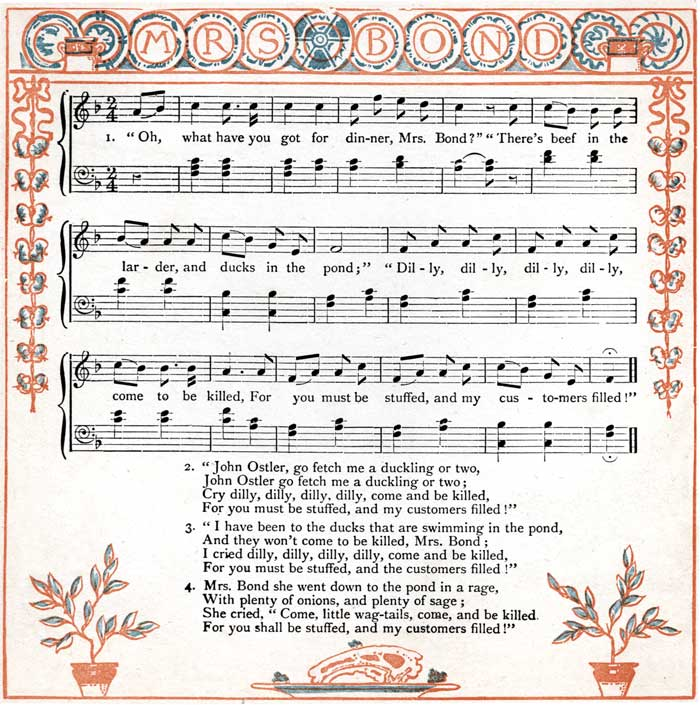
|
1. “Oh, what have you got for dinner, Mrs. Bond?” “There’s beef in the larder, and ducks in the pond;” “Dilly, dilly, dilly, dilly, come to be killed, For you must be stuffed, and my customers filled!” 2. “John Ostler, go fetch me a duckling or two, John Ostler go fetch me a duckling or two; Cry dilly, dilly, dilly, dilly, come and be killed, For you must be stuffed, and my customers filled!” 3. “I have been to the ducks that are swimming in the pond, And they won’t come to be killed, Mrs. Bond; I cried dilly, dilly, dilly, dilly, come and be killed, For you must be stuffed, and the customers filled!” 4. Mrs. Bond she went down to the pond in a rage, With plenty of onions, and plenty of sage; She cried, “Come, little wag-tails, come, and be killed. For you shall be stuffed, and my customers filled!” |
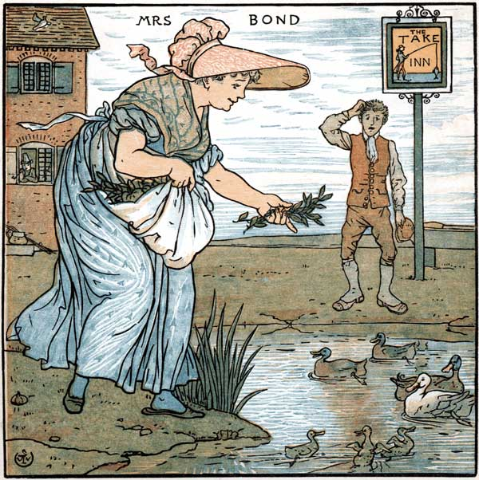
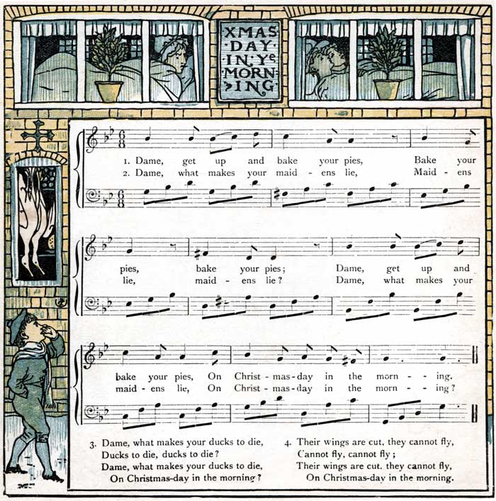
|
1. Dame, get up and bake your pies, Bake your pies, bake your pies; Dame, get up and bake your pies, On Christmas-day in the morning. 2. Dame, what makes your maidens lie, Maidens lie, maidens lie? Dame, what makes your maidens lie, On Christmas-day in the morning? 3. Dame, what makes your ducks to die, Ducks to die, ducks to die? Dame, what makes your ducks to die, On Christmas-day in the morning? 4. Their wings are cut, they cannot fly, Cannot fly, cannot fly; Their wings are cut, they cannot fly, On Christmas-day in the morning. |
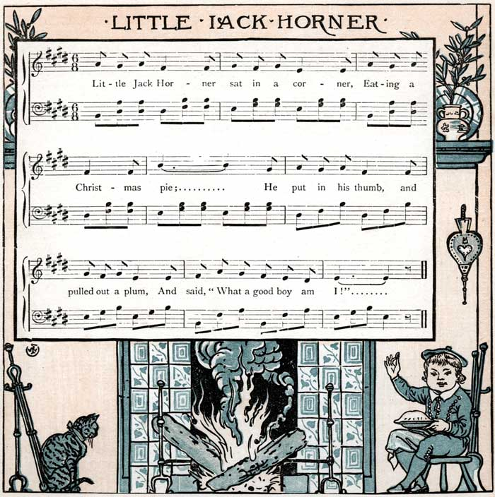
|
Little Jack Horner sat in a corner, Eating a Christmas pie; He put in his thumb, and pulled out a plum, And said, “What a good boy am I!” |
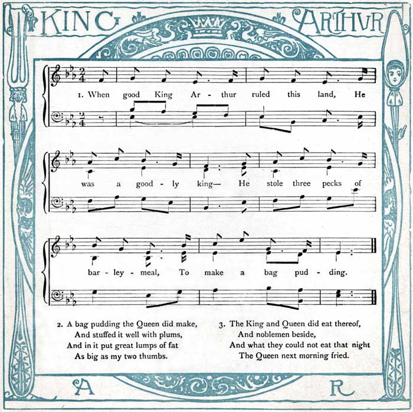
|
1. When good King Arthur ruled this land, He was a goodly king— He stole three pecks of barley-meal, To make a bag pudding. 2. A bag pudding the Queen did make, And stuffed it well with plums, And in it put great lumps of fat As big as my two thumbs. 3. The King and Queen did eat thereof, And noblemen beside, And what they could not eat that night The Queen next morning fried. |
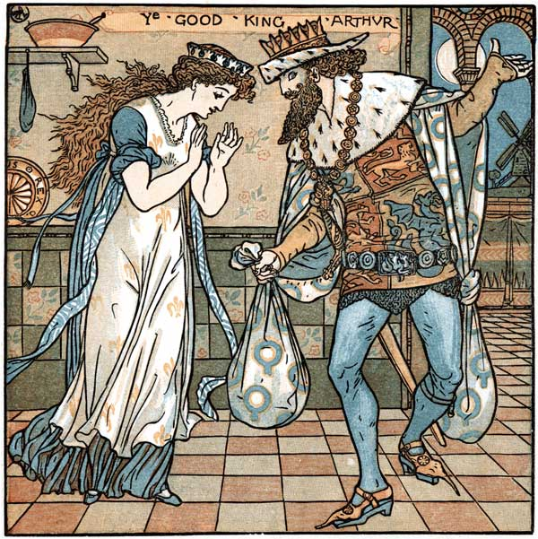
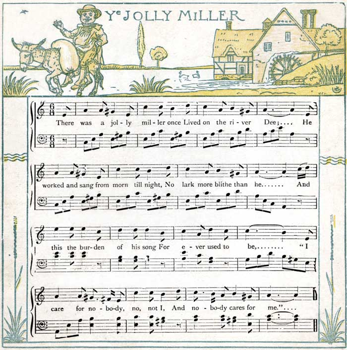
|
There was a jolly miller once Lived on the river Dee; He worked and sang from morn till night, No lark more blithe than he. And this the burden of his song For ever used to be, “I care for nobody, no, not I, And nobody cares for me.” |
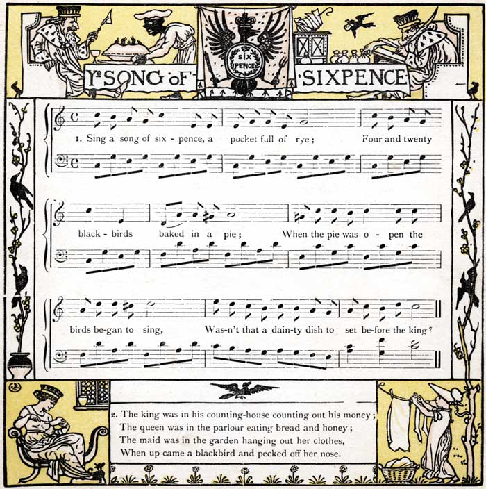
|
1. Sing a song of sixpence, a pocket fall of rye; Four and twenty blackbirds baked in a pie; When the pie was open the birds began to sing, Wasn’t that a dainty dish to set before the king? 2. The king was in his counting-house counting out his money; The queen was in the parlour eating bread and honey; The maid was in the garden hanging out her clothes, When up came a blackbird and pecked off her nose. |
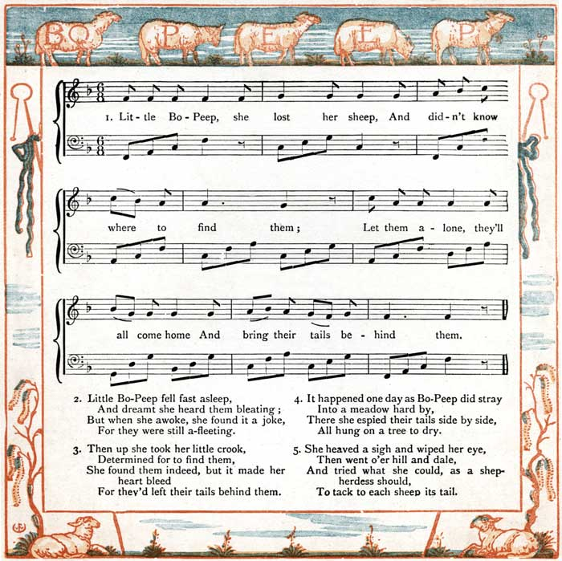
|
1. Little Bo-Peep, she lost her sheep, And didn’t know where to find them; Let them alone, they’ll all come home And bring their tails behind them. 2. Little Bo-Peep fell fast asleep, And dreamt she heard them bleating; But when she awoke, she found it a joke, For they were still a-fleeting. 3. Then up she took her little crook, Determined for to find them, She found them indeed, but it made her heart bleed For they’d left their tails behind them. 4. It happened one day as Bo-Peep did stray Into a meadow hard by, There she espied their tails side by side, All hung on a tree to dry. 5. She heaved a sigh and wiped her eye, Then went o’er hill and dale, And tried what she could, as a shepherdess should, To tack to each sheep its tail. |
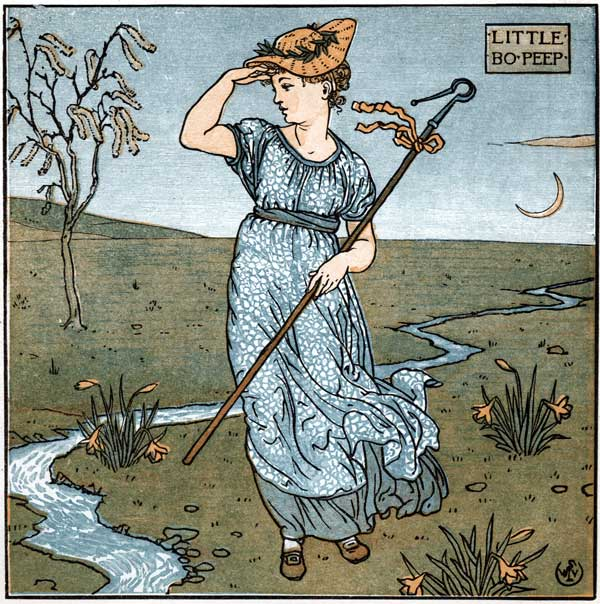
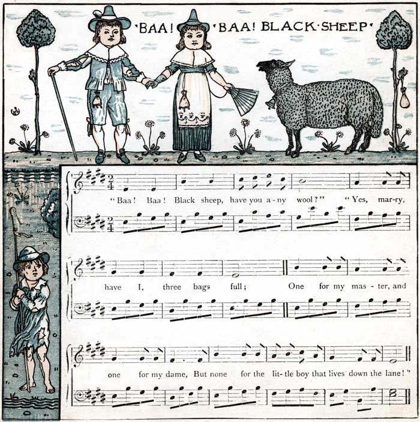
|
“Baa! Baa! Black sheep, have you any wool?” “Yes, marry, have I, three bags full; One for my master, and one for my dame, But none for the little boy that lives down the lane!” |
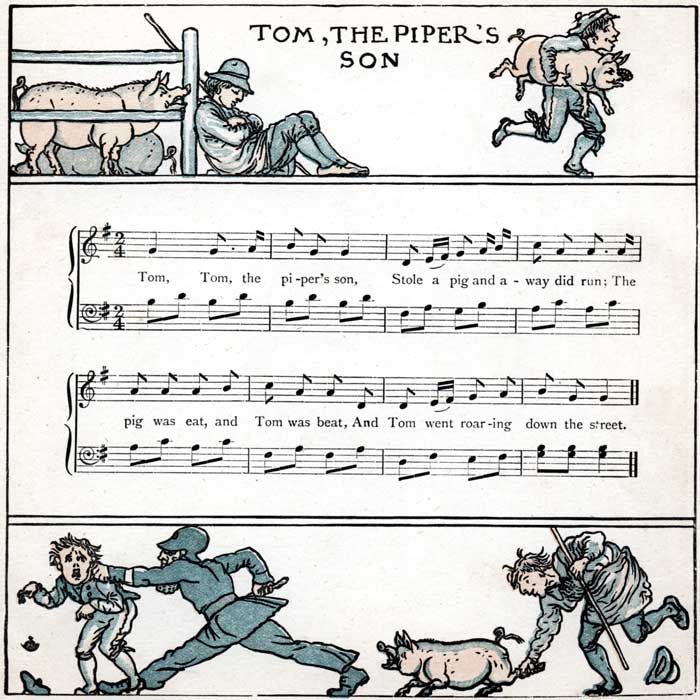
|
Tom, Tom, the piper’s son, Stole a pig and away did run; The pig was eat, and Tom was beat, And Tom went roaring down the street. |
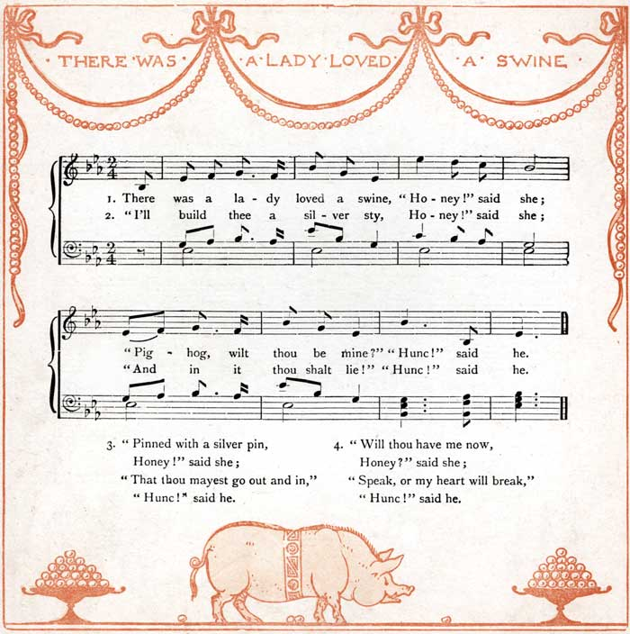
|
1. There was a lady loved a swine, “Honey!” said she; “Pig-hog, wilt thou be mine?” “Hunc!” said he. 2. “I’ll build thee a silver sty, Honey!” said she; “And in it thou shalt lie!” “Hunc!” said he. 3. “Pinned with a silver pin, Honey!” said she; “That thou mayest go out and in,” “Hunc!” said he. 4. “Will thou have me now, Honey?” said she; “Speak, or my heart will break,” “Hunc!” said he. |
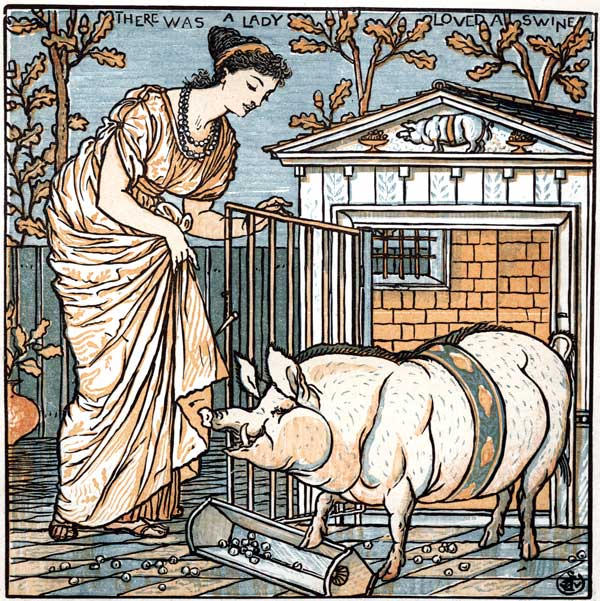
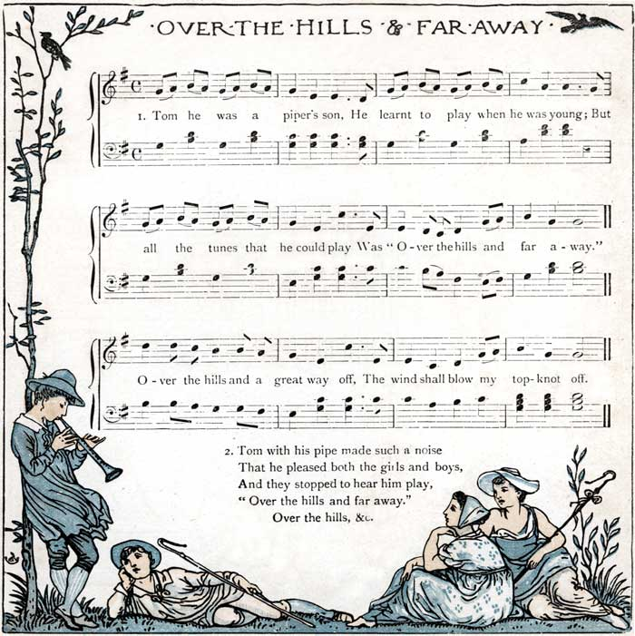
|
1. Tom he was a piper’s son, He learnt to play when he was young; But all the tunes that he could play Was “Over the hills and far away.” Over the hills and a great way off, The wind shall blow my top-knot off. 2. Tom with his pipe made such a noise That he pleased both the girls and boys, And they stopped to hear him play, “Over the hills and far away.” Over the hills, &c. |
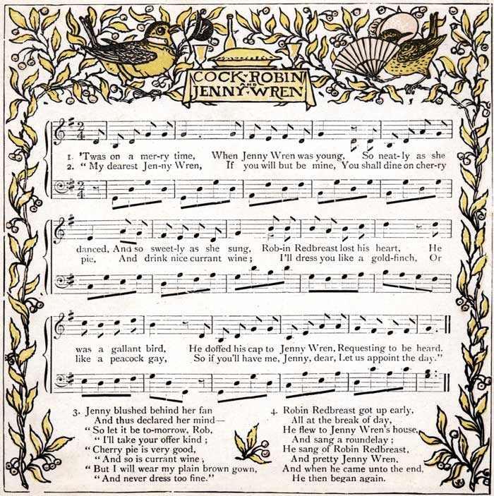
|
1. ’Twas on a merry time, When Jenny Wren was young, So neatly as she danced, And so sweetly as she sung, Robin Redbreast lost his heart, He was a gallant bird, He doffed his cap to Jenny Wren, Requesting to be heard. 2. “My dearest Jenny Wren, If you will but be mine, You shall dine on cherry pie, And drink nice currant wine; I’ll dress you like a gold-finch, Or like a peacock gay, So if you’ll have me, Jenny, dear, Let us appoint the day.” 3. Jenny blushed behind her fan And thus declared her mind— “So let it be to-morrow, Rob, I’ll take your offer kind; Cherry pie is very good, And so is currant wine, But I will wear my plain brown gown, And never dress too fine.” 4. Robin Redbreast got up early, All at the break of day, He flew to Jenny Wren’s house, And sang a roundelay; He sang of Robin Redbreast, And pretty Jenny Wren, And when he came unto the end, He then began again. |
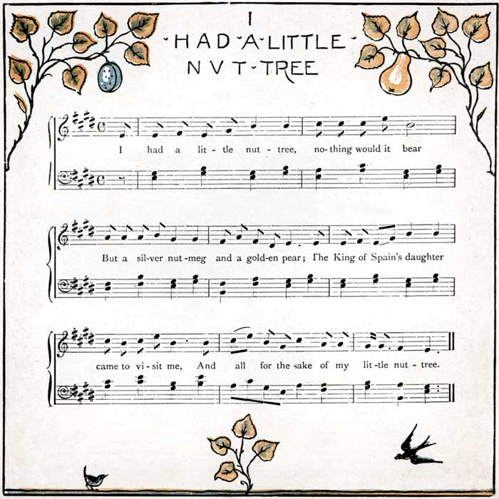
|
I had a little nut-tree, nothing would it bear But a silver nutmeg and a golden pear; The King of Spain’s daughter came to visit me, And all for the sake of my little nut-tree. |
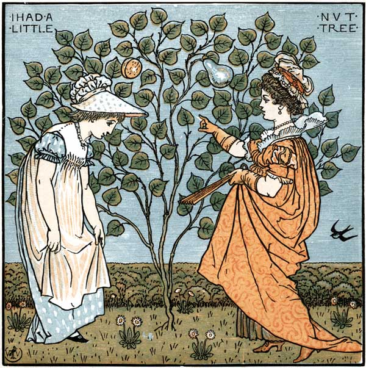
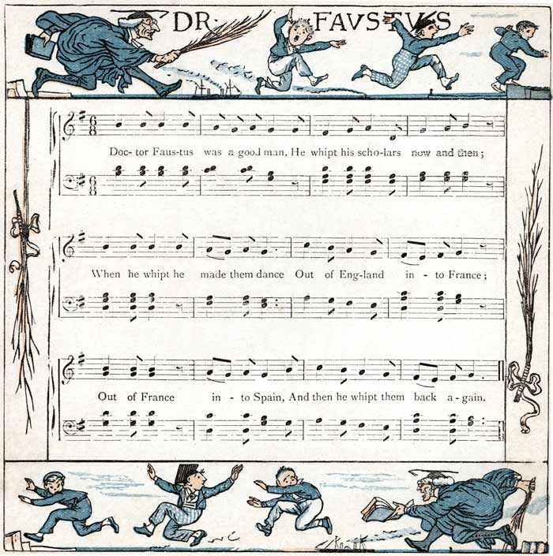
|
Doctor Faustus was a good man, He whipt his scholars now and then; When he whipt he made them dance Out of England into France; Out of France into Spain, And then he whipt them back again. |
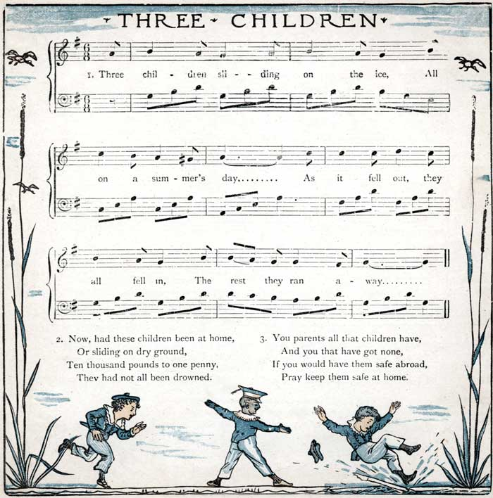
|
1. Three children sliding on the ice, All on a summer’s day, As it fell out, they all fell in, The rest they ran away. 2. Now, had these children been at home, Or sliding on dry ground, Ten thousand pounds to one penny, They had not all been drowned. 3. You parents all that children have, And you that have got none, If you would have them safe abroad, Pray keep them safe at home. |
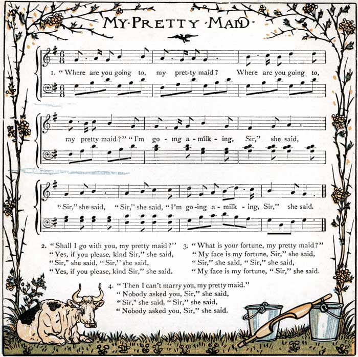
|
1. “Where are you going to, my pretty maid? Where are you going to, my pretty maid?” “I’m going a-milking, Sir,” she said, “Sir,” she said, “Sir,” she said, “I’m going a-milking, Sir,” she said. 2. “Shall I go with you, my pretty maid?” “Yes, if you please, kind Sir,” she said, “Sir,” she said, “Sir,” she said, “Yes, if you please, kind Sir,” she said. 3. “What is your fortune, my pretty maid?” “My face is my fortune, Sir,” she said, “Sir,” she said, “Sir,” she said, “My face is my fortune, Sir,” she said. 4. “Then I can’t marry you, my pretty maid.” “Nobody asked you, Sir,” she said, “Sir,” she said, “Sir,” she said, “Nobody asked you, Sir,” she said. |
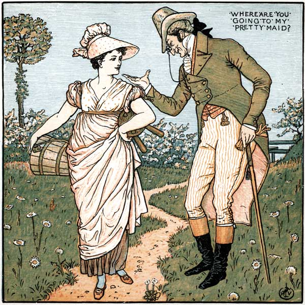
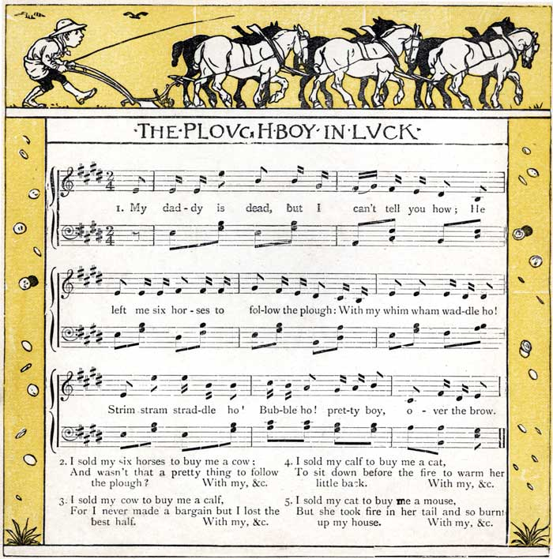
|
1. My daddy is dead, but I can’t tell you how; He left me six horses to follow the plough; With my whim wham waddle ho! Strim stram straddle ho! Bubble ho! pretty boy, over the brow. 2. I sold my six horses to buy me a cow; And wasn’t that a pretty thing to follow the plough? With my, &c. 3. I sold my cow to buy me a calf, For I never made a bargain but I lost the best half. With my, &c. 4. I sold my calf to buy me a cat, To sit down before the fire to warm her little back. With my, &c. 5. I sold my cat to buy me a mouse, But she took fire in her tail and so burnt up my house. With my, &c. |
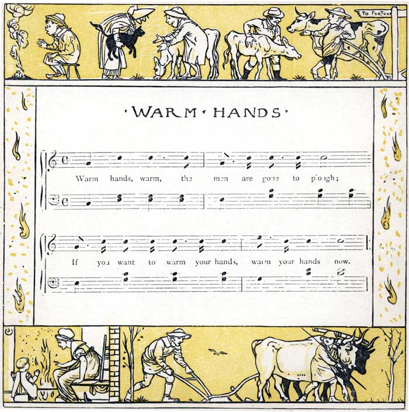
|
Warm hands, warm, thy men are gone to plough; If you want to warm your hands, warm your hands now. |
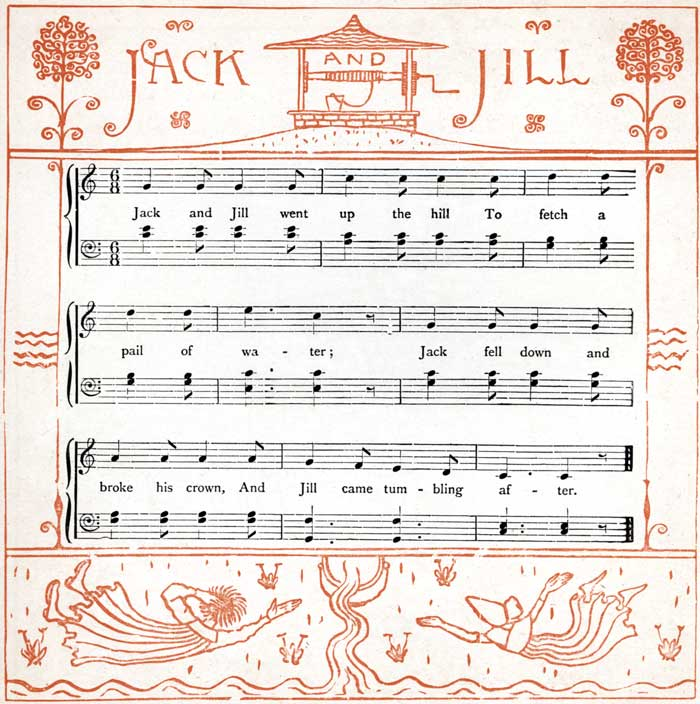
|
Jack and Jill went up the hill To fetch a pail of water; Jack fell down and broke his crown, And Jill came tumbling after. |
|
Dance a baby diddy! What can mammy do wid’e? Sit in her lap, Give it some pap, And dance a baby diddy! |
|
Hush-a-by baby on the tree-top, When the wind blows the cradle will rock; When the bough breaks the cradle will fall— Down comes baby, cradle and all! |
|
Old King Cole was a merry old soul, And a merry old soul was he; He called for his pipe, and he called for his bowl, And he called for his fiddlers three. Ev’ry fiddler had a fiddle, And a very fine fiddle had he. Tweedle dee, tweedle dee, tweedle dee, tweedle dee, Tweedle dee, tweedle dee, went the fiddlers three, O there’s none so rare as can compare With King Cole and his fiddlers three. |
FINIS
|
Hey diddle diddle! the cat and the fiddle, The cow skipt over the moon; The little dog laughed to see the fine sport, And the dish ran away with the spoon. |